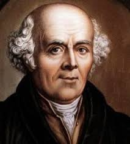

Introduction
Samuel Hahnemann, born in 1755, was a German physician best known for founding the system of homeopathy. Frustrated with the ineffective and often harmful practices of conventional medicine during his time, Hahnemann developed the principles of homeopathy, which emphasize the body’s ability to heal itself through the use of highly diluted substances.
Homeopathy has since become a popular alternative medicine, and Hahnemann’s ideas revolutionized the treatment of illnesses in the 19th century.
